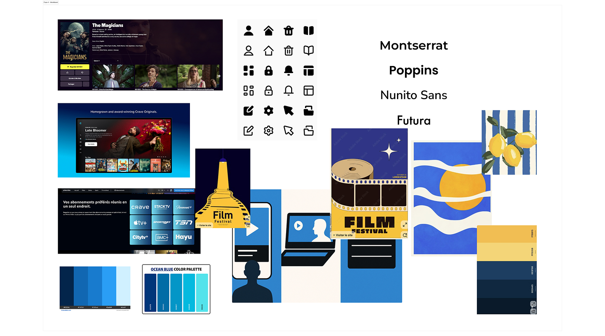
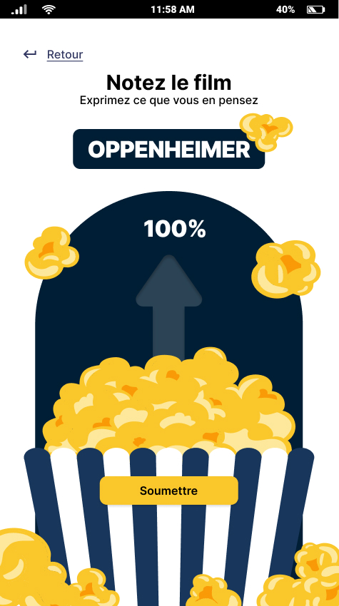

Pour les amoureux de films
Application Timflix
Désing UI/UX d’une application de cinéma

Application Timflix
Désing UI/UX d’une application de cinéma
J’ai utilisé l’IA pour corriger mes textes et pour générer du contenu fictif pour les profils.
Dans le cours de design d’interface, nous devions créer une application de cinéma afin de nous pratiquer à prototyper nos maquettes.

Rendre l’application intuitive et facilement navigable. Elle devait également respecter la grille de correction. Finalement, le système de vote devait être original.


Légende

Légende
Légende
Personnellement, je suis parti sur une palette de couleurs bleue et jaune. Des couleurs le fun et lisibles sur la plupart des arrière-plans. Ma typographie apportait également un aspect le fun.

Légende

Légende

Légende
Voici les 5 étapes majeures de ce projet qui l’ont mené à sa complétion.
étape
titre
en gros
Dans ce projet, j’ai beaucoup appris à prototyper avec Figma. Puisque j’étais encore nouveau avec ce logiciel, ce projet a été un élément clé dans ma progression.
Ce projet a été réalisé dans le cadre de mon portfolio afin de créer une identité visuelle qui représente